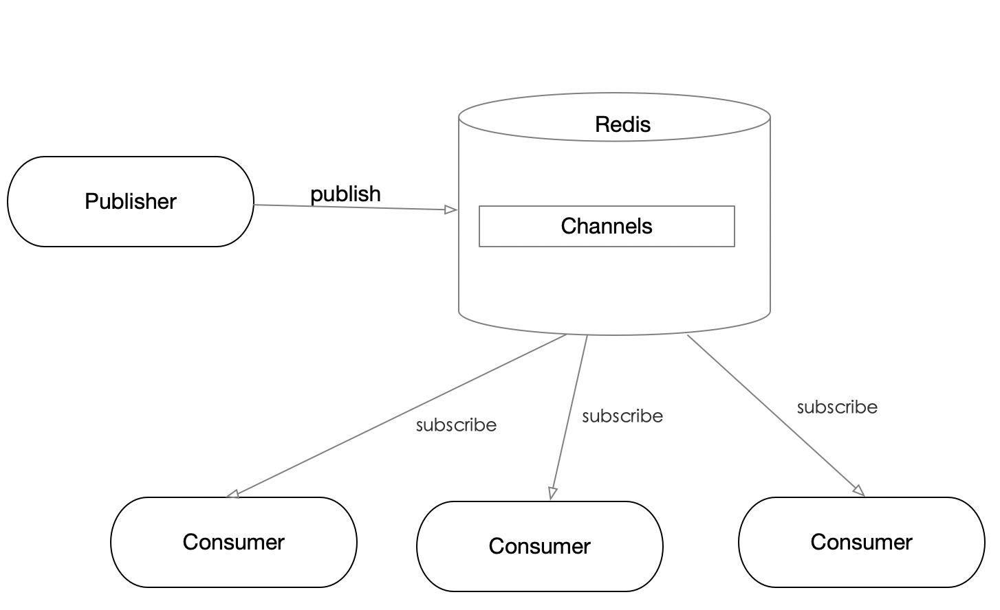

前述
本篇讲述的内容主要是一些概念性的东西，彼此之间没有太多关联性，也不打算太深入，写的时候觉得是个知识点都会把它记录下来，后续会针对某些内容单独写篇文章，可以关注Redis系列的其它内容。
本篇的最后，泛概讲解了下Redis常见数据类型String，List， Hash，Set，ZSet的C语言结构。相关内容参考了Redis设计与实现
Redis特点
-
是一个单线程应用。
-
是一个内存中的数据结构存储系统，支持丰富数据类型。
-
常用作缓存，可以持久化数据到硬盘。
-
支持简单的消息队列协议，可用作普通的消息队列中间件。
-
内置Lua脚本支持。
-
支持事务和LRU事件。
Pub/Sub（分发和订阅）
Publisher（生产者）不将消息发送给特定的Consumer（消费者），而是发送到channel（频道）。订阅相应channel的Consumer都将收到消息，Publisher往channel分发消息，它不需要知道都有哪些Consumer订阅了消息。

下面是Pub/Sub最简单的使用。
首先客户端订阅了两个channel。分别是first，second。
127.0.0.1:6379[1]> SUBSCRIBE first second
Reading messages... (press Ctrl-C to quit)
1) "subscribe"
2) "first"
3) (integer) 1
1) "subscribe"
2) "second"
3) (integer) 2
服务端Publisher分发消息
127.0.0.1:6379> PUBLISH first hello
(integer) 1
127.0.0.1:6379> PUBLISH second "hello redis"
(integer) 1
客户端将收到如下消息
1) "message"
2) "first"
3) "hello"
1) "message"
2) "second"
3) "hello redis"
Pipelining模式
Pipelining即管道。使用Pipelining，我们可以一次向Redis发送多个命令请求，并一次获得请求结果。Pipelining有如下优点。
-
避免单个命令发送多次阻塞。Redis每一个命令请求，Client都会阻塞等待结果。Pipelining一次向Redis Server发送多个命令，减少了阻塞次数。
-
减少了网络RTT。Pipelining将请求和回复一次传输，减少了网络传输次数和总时间。
-
降低了Socket IO时间。对于Redis命令，请求和产生结果相对较快，而读写IO相对较慢。一次Pipelining请求只读写一次IO，这比多个命令分开请求减少了IO读写次数。
数据持久化
Redis提供快照RDB和AOF两种持久化方式。RDB持久化方式会在一个特定的间隔保存那个时间点的一个数据快照。AOF持久化方式则会记录服务器收到的每一个写操作。在服务启动时， 重新执行这些日志重建原来的数据。
RDB工作方式
-
Redis调用fork()，产生一个子进程。
-
子进程把数据写到一个临时的RDB文件。
-
当子进程写完新的RDB文件后，把旧的RDB文件替换掉。
RDB和AOF优缺点对比
参加Redis持久化和官网Redis Persistence
内存优化
-
Redis string数据结构没有采用C预约的string，而是自己设计了数据结构，保持了字符串长度和预分配空间。由于预分配空间的存在，会造成内存浪费，因此不要频繁的使用字符串append操作。
-
共享内存。Redis存储整数时会共享内存。但是设置maxmemory和LRU时失效，应注意相关数据和设置的优化。
-
编码优化。当对象数量和体积比较小时，Redis会使用压缩列表或整数集合存储。使用OBJECT ENCODING key查看存结构。
-
控制key数量。过多的key会造成内存浪费，可以将多个key整合到hash类型里，并保证value不超过hash-max-ziplist-value限制，这样可以利用ziplist编码。
参考Redis的内存优化和官网memory-optimization
缓存更新策略
-
被动删除：当读/写一个已经过期的key时，会触发惰性删除策略，直接删除掉这个过期key
-
主动删除：由于惰性删除策略无法保证冷数据被及时删掉，所以Redis会定期主动淘汰一批已过期的key
-
当前已用内存超过maxmemory限定时，触发主动清理策略
事务
Redis通过MULTI、DISCARD、EXEC和WATCH四个命令来实现事务功能。Redis事务并不保证严格的事务特性，当执行错误时，并不能回滚到之前的操作。下面是Redis事务和严格事务的特性对比。
-
原子性（Atomicity），Redis单个命令是原子性的，但是Redis事务并不保证原子性，因为执行发生错误它并不回滚。
-
一致性（Consistency），入队错误，执行错误保证一致性。
-
隔离性（Isolation），Redis是单线程，事务总是满足隔离性的。
-
持久性（Durability），持久性和是内存模式还是硬盘模式有关。内存模式重启数据丢失。
数据类型
1: string
Redis的string类型未复用C，自定义类型SDS。类型定义如下。
struct sdshdr {
int len; // 长度
int free; // 剩余可用空间
char buf[]; // 保存字符串的数组
};
使用SDS有如下优点。
- 保存了字符串长度，获取长度的时间复杂度为O(1)。
- SDS的free可以减少字符串扩展和收索时的内存再分配次数，也可以用来避免数组溢出。
- 二进制安全，不靠'\0'判断字符串是否结束，而是字符串长度。
2: list
Redis list中每个节点是一个listNode结构，多个listNode组成一个双向链表。而list结构本身保存链表的长度，头尾指针，以及三个操作函数。
typedef struct listNode {
struct listNode *prev;
struct listNode *next;
void *value; // 节点值保存指针
} listNode;
typedef struct list {
listNode *head;
listNode *tail;
unsigned long len;
void *(*dup)(void *ptr); // 节点复制函数
void (*free)(void *ptr); // 节点释放函数
int (*match)(void *ptr, void *key); // 节点对比函数
} list;
基于list结构，读取list头尾节点元素的时间复杂度为O(1)，读取list长度的时间复杂度也是O(1)。
3: hash
typedef struct dictht {
dictEntry **table; // hash表数组
unsigned long size; // 哈希表容量大小
unsigned long sizemask; // 哈希表大小掩码，用于计算索引值
unsigned long used; // 元素个数
};
typeof struct dictEntry{
void *key; // 键
union{ // 值
void *val;
uint64_tu64;
int64_ts64;
}
struct dictEntry *next;
};
上面是Redis hash表的定义，每个hash表元素类型为dictEntry，如果hash值冲突，会用next指针指向下一个dictEntry节点（链地址法）。
Redis又在dictht的基础上，又抽象了一层字典dict。
typedef struct dictType {
uint64_t (*hashFunction)(const void *key);
void *(*keyDup)(void *privdata, const void *key);
void *(*valDup)(void *privdata, const void *obj);
int (*keyCompare)(void *privdata, const void *key1, const void *key2);
void (*keyDestructor)(void *privdata, void *key);
void (*valDestructor)(void *privdata, void *obj);
} dictType;
typedef struct dict {
dictType *type;
void *privdata;
dictht ht[2];
long rehashidx; /* rehashing not in progress if rehashidx == -1 */
unsigned long iterators; /* number of iterators currently running */
} dict;
type和privdata是针对不同类型键值对，为创建多态字典而设置的。type指向dictType的指针，而privdata则是传给那些类型特定函数的可选参数。
ht属性包含两个dictht元素的数组，其中ht[1]只用字rehash（hash重构）时才使用。
4: set
下面是整数集合的结构。如果集合包含的元素足够少，且所有成员都能表示为平台有符号范围之内的十进制整数，那么Redis会采用整数集合这种有序数组来存储集合。
typedef struct intset{
uint32_t encoding; //编码方式
uint32_t length; // 集合包含的元素数量
int8_t contents[]; //保存元素的数组
};
上面的intset contents虽然定义成int8类型，但它实际存储类型根据encoding而定，可能是int16，int32，int64等。
对于原先所有元素都用int16表示的intset，如果新插入的元素需要int32或者int64表示，就需要对contents进行升级（重新分配更大的空间），然后将原有的元素复制到新分配的空间，再插入新元素，仍需保持intset的有序。
关于更多intset升级的内容，可以查看黄健宏的《Redis设计与实现》升级
5: sorted set
有序集合的底层实现是跳跃表（skiplist），是一种有序数据结构，它通过在每个节点中维持多个指向其他节点的指针，从而达到快速查找访问节点的目的。
typedef struct zskiplistNode{
//层
struct zskiplistLevel{
//前进指针
struct zskiplistNode *forward;
//跨度
unsigned int span;
} level[];
//后退指针, 用于从表尾向表头方向访问节点
struct zskiplistNode *backward;
//分值, 用于排序
double score;
//成员对象
robj *obj;
};
跳跃表是链表的扩展，是一种快速查找结构。相比B树，红黑树等平衡二叉树，跳跃表实现简单。
下图是一个简单的跳跃表

相对于普通链表，跳跃表随机化给节点分层，增加前向指针，从而利用二分查找的优势。 跳表具有如下性质：
(1) 由很多层结构组成
(2) 每一层都是一个有序的链表
(3) 最底层(Level 1)的链表包含所有元素
(4) 如果一个元素出现在 Level i 的链表中，则它在 Level i 之下的链表也都会出现。
(5) 每个节点包含两个指针，一个指向同一链表中的下一个元素，一个指向下面一层的元素。
参考资料：
6: 压缩列表（ziplist）
在列表，散列，有序集合长度比较短或者体积比较小时，Redis可以选择用ziplist这种紧凑结构来存储这些类型。对于大小和体积，可以通过配置项修改。下面是list使用ziplist的默认配置项，hash和zset把开头的list更换也有对应的配置。
list-max-ziplist-entries 512
list-max-ziplist-value 512
ziplist的连锁更新
下面是压缩列表每个节点元素的构成结构。
| previous_entry_length | encoding | content |
其中previous_entry_length存储前一个元素的长度，encoding存储当前节点元素类型和长度，content存储当前节点元素内容。
对于previous_entry_length，当前一个元素长度小于254字节，需要1个字节来存储长度。当前一个元素长度大于等于254时，需要5字节来存储长度。
如上所述，Redis为了节省内存，previous_entry_length所占空间长度是根据前一个元素的长度变动的。因此，当插入一个长度大于254的元素时，就可能造成当前节点的previous_entry_length空间无法存储其长度，因此需要扩展，而这样的扩展，就可能造成下一个节点的扩展，这种现象叫ziplist的连锁更新。
连锁更新时间复杂度为O(N^2) ，但是触碰的几率很低。
关于连锁更新更详细介绍，可以查看黄健宏的《Redis设计与实现》连锁更新
上面的配置中，entries项指定在ziplist下允许包含的元素最大数量，value指定ziplist下每个节点的最大体积。如果超过这个限制，Redis会将ziplist存储转换为对应类型通常的存储结构。
参考资料：
quiklist
在用DEBUG OBJECT查看list和hash的encoding时，我们看到有一种存储类型是quiklist。它是zipList和linkedList（双向链表）的混合体，它将linkedList按段切分，每一段使用zipList来紧凑存储，多个zipList之间使用双向指针串接起来。
下面是一个简单的quiklist示例图。
下面是quiklist的Redis C定义。
struct quicklist {
quicklistNode* head;
quicklistNode* tail;
long count; // 元素总数
int nodes; // ziplist 节点的个数
int compressDepth; // LZF 算法压缩深度
...
}
struct quicklistNode {
quicklistNode* prev;
quicklistNode* next;
ziplist* zl; // 指向压缩列表
int32 size; // ziplist 的字节总数
int16 count; // ziplist 中的元素数量
int2 encoding; // 存储形式2bit，原生字节数组还是LZF压缩存储
...
}
参考资料
后述
本篇大体讲解了Redis一些常见概念和数据类型，Redis的其它系列会扩展和讲解其它知识点，下面是一些内容。